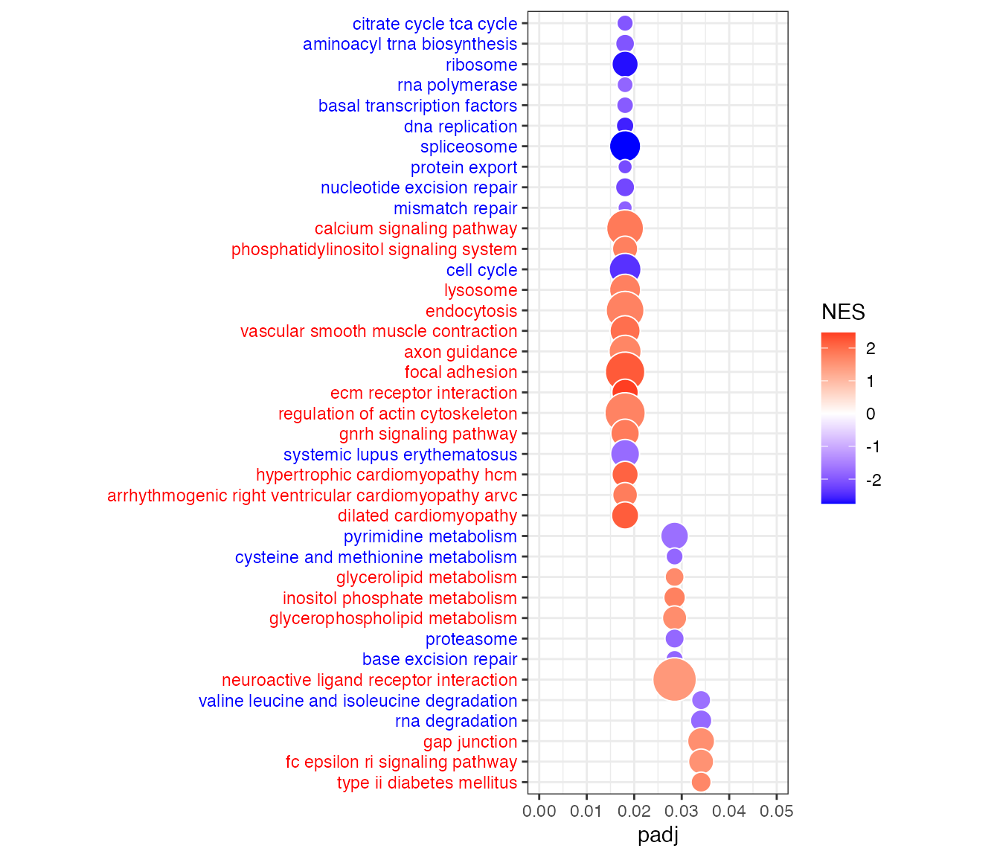

pandaRApplicationinGTExData.RmdIn this vignette, we will build one regulatory network for LCL cell line samples and one for whole blood samples from the GTEx gene expression data using the netZooR package. Next, we will compare the two networks, and find the pathways enriched for genes differentially targeted between the LCL cell line and whole blood.
Cell lines are an essential tool in biomedical research and often used as surrogates for tissues. LCLs (obtained from the transformation of B cells present in whole blood) are among the most widely used continuous cell lines with the ability to proliferate indefinitely. By comparing the regulatory networks of LCL cell lines with its tissue of origin (whole blood), we find that LCLs exhibit large changes in their patterns of transcription factor regulation, specifically a loss of repressive transcription factor targeting of cell cycle genes.
if (!requireNamespace("BiocManager", quietly = TRUE))
install.packages("BiocManager",repos = "http://cran.us.r-project.org")
BiocManager::install("fgsea")
# install.packages("reshape2",repos = "http://cran.us.r-project.org")
install.packages("ggplot2",repos = "http://cran.us.r-project.org")
install.packages("devtools")
library(devtools)
devtools::install_github("netZoo/netZooR", build_vignettes = FALSE)PANDA (Passing Attributes between Networks for Data Assimilation) is a method for constructing gene regulatory networks. It uses message passing to find congruence between 3 different data layers: protein-protein interaction (PPI), gene expression, and transcription factor (TF) motif data.
More details can be found in the published paper https://doi.org/10.1371/journal.pone.0064832.
Now we locate our ppi and motif priors. The ppi represents physical interactions between transcription factor proteins, and is an undirected network. The transcription factor motif prior represents putative regulation events where a transcription factor binds in the promotor of a gene to regulate its expression, as predicted by the presence of transcription factor binding motifs in the promotor region of the gene. The motif prior is thus a directed network linking transcription factors to their predicted gene targets. These are small example priors for the purposes of demonstrating this method. A complete set of motif priors by species can be downloaded from: https://sites.google.com/a/channing.harvard.edu/kimberlyglass/tools/resources
The function source.PPI can be used to source the protein-protein interaction in the STRING database.
Let’s take a look at the priors:
# download motif and ppi file from AWS Bucket
system("curl -O https://netzoo.s3.us-east-2.amazonaws.com/netZooR/tutorial_datasets/motif_subset.txt")
system("curl -O https://netzoo.s3.us-east-2.amazonaws.com/netZooR/tutorial_datasets/ppi_subset.txt")
motif <- read.delim("./motif_subset.txt", stringsAsFactors=F, header=F)
ppi <- read.delim("./ppi_subset.txt", stringsAsFactors=F, header=F)
ppi[1:5,]
#> V1 V2 V3
#> 1 ASCL1 ASCL1 1.000
#> 2 ASCL1 BHLHE41 0.314
#> 3 ASCL1 DLX3 0.188
#> 4 ASCL1 EN2 0.790
#> 5 ASCL1 HES4 0.451
motif[1:5,]
#> V1 V2 V3
#> 1 ASCL1 RPAP3 0
#> 2 ASCL1 ACSM3 0
#> 3 ASCL1 CREBBP 0
#> 4 ASCL1 ZNF263 0
#> 5 ASCL1 RALA 0Now we locate our expression data. As an example, we will use a subset of the GTEx version 7 RNA-Seq data, downloaded from https://gtexportal.org/home/datasets. We start with a subset of RNA-Seq data (tpm normalized) for 1,000 genes from 130 LCL cell line samples and 407 whole blood samples.
# dowload and load the GTEx expression matrix (tpm normalized expression)
system("curl -O https://netzoo.s3.us-east-2.amazonaws.com/netZooR/tutorial_datasets/expression_tpm_lcl_blood_subset.txt")
exp <- read.delim("./expression_tpm_lcl_blood_subset.txt", stringsAsFactors = F, check.names = F)
# Log transform the tpm normalized expression
exp <- log2(exp+1)
# Determine the number of non-NA/non-zero rows in the expression data. This is to be able to ensure that PANDA will have enough values in the vectors to calculate pearson correlations between gene expression profiles in the construction of the gene co-expression prior.
zero_na_counts <- apply(exp, MARGIN = 1, FUN = function(x) length(x[(!is.na(x) & x!=0) ]))
# Maintain only genes with at least 20 valid gene expression entries
exp <- exp[zero_na_counts > 20,]
# # The set of genes in the expression, motif and ppi matrices must be the same
# exp <- exp[rownames(exp) %in% motif$V2,]
# motif_subset <- motif[(motif$V1 %in% rownames(exp)) & (motif$V2 %in% rownames(exp)),]
# ppi_subset <- ppi[(ppi$V1 %in% motif_subset$V1) & (ppi$V2 %in% motif_subset$V1),]
# Load the sample ids of LCL samples
system("curl -O https://netzoo.s3.us-east-2.amazonaws.com/netZooR/tutorial_datasets/LCL_samples.txt")
lcl_samples <-read.delim("./LCL_samples.txt", header=FALSE, stringsAsFactors=FALSE)
# Select the columns of the expression matrix corresponding to the LCL samples
lcl_exp <- exp[,colnames(exp) %in% lcl_samples[,1]]
# Load the sample ids of whole blood samples
system("curl -O https://netzoo.s3.us-east-2.amazonaws.com/netZooR/tutorial_datasets/WholeBlood_samples.txt")
wblood_samples <-read.delim("./WholeBlood_samples.txt", header=FALSE, stringsAsFactors=FALSE)
# Select the columns of the expression matrix corresponding to the whole blood samples
wb_exp <- exp[,colnames(exp) %in% wblood_samples[,1]]Now we run PANDA, pointing it to the parsed expression data, motif prior and ppi prior. We will point to the same motif and ppi priors for each PANDA run, which represents the initial putative regulatory information. We then point to the expression matrix correspoding to the LCL samples to generate the LCL regulatory network, and to the expression matrix corresponding to the whole blood samples to generate the whole blood regulatory network.
pandaLCL <- panda(motif, lcl_exp, ppi, mode="intersection")
pandaWB <- panda(motif, wb_exp, ppi, mode="intersection")
pandaLCL
#> PANDA network for968genes and50transcription factors.
#>
#> Slots:
#> regNet : Regulatory network of 50 transcription factors to 968 genes.
#> coregNet: Co-regulation network of 968 genes.
#> coopNet : Cooperative network of 50 transcription factors.
#> Regulatory graph contains 48400 edges.
#> Regulatory graph is complete.
pandaWB
#> PANDA network for968genes and50transcription factors.
#>
#> Slots:
#> regNet : Regulatory network of 50 transcription factors to 968 genes.
#> coregNet: Co-regulation network of 968 genes.
#> coopNet : Cooperative network of 50 transcription factors.
#> Regulatory graph contains 48400 edges.
#> Regulatory graph is complete.The regulatory network (bipartite graph) with edge weights representing the “likelihood” that a transcription factor binds the promotor of and regulates the expression of a gene.
# The bipartite regulatory network (transcription factors as rows and target genes as columns)
regNetLCL <- pandaLCL@regNet
regNetLCL[1:5,1:5]
#> RP4-669L17.8 MTND2P28 HES4 ACTRT2 RP3-467L1.6
#> ASCL1 -0.4338663 -0.06046052 0.43546720 -0.3541327 -0.1055712
#> BARX1 -0.5516320 -0.83640043 -0.68106570 -0.2683416 0.0649070
#> BHLHE41 -0.4478896 -0.22003403 -0.03953981 -0.2154970 -0.4435292
#> CEBPD -0.1053101 0.06674693 -0.04042170 -0.2018673 -0.5209635
#> CEBPZ -0.2151449 -0.16801549 -0.12427431 -0.3099354 -0.5307553
regNetWB <- pandaWB@regNetIn this section we will visualize parts of the network using the Cytoscape software. Download Cytoscape from: https://cytoscape.org and have the software open before calling the function.
# We will use the function vis.panda.in.cytoscape to plot a set of nodes and edges on Cytoscape. The input for this function is a data.frame of edges to plot with 4 columns: "tf", "gene", "motif" (TF motif present or not on gene promoter), "force" (edge weight calculated by PANDA).
lcl_vis <- reshape2::melt(pandaLCL@regNet)
wb_vis <- reshape2::melt(pandaWB@regNet)
lcl_vis <- data.frame("TF"=as.character(lcl_vis[,1]),"Gene"=as.character(lcl_vis[,2]),"Motif"=NA,"Score"=as.numeric(lcl_vis[,3]),stringsAsFactors = FALSE)
wb_vis <- data.frame("TF"=as.character(wb_vis[,1]),"Gene"=as.character(wb_vis[,2]),"Motif"=NA,"Score"=as.numeric(wb_vis[,3]),stringsAsFactors = FALSE)
head(lcl_vis)
#> TF Gene Motif Score
#> 1 ASCL1 RP4-669L17.8 NA -0.4338663
#> 2 BARX1 RP4-669L17.8 NA -0.5516320
#> 3 BHLHE41 RP4-669L17.8 NA -0.4478896
#> 4 CEBPD RP4-669L17.8 NA -0.1053101
#> 5 CEBPZ RP4-669L17.8 NA -0.2151449
#> 6 CENPB RP4-669L17.8 NA -0.1024927
n=200 # number of edges to plot
top <- order(lcl_vis$Score,decreasing=T)[1:n]
lcl_vis_top <- lcl_vis[top,]
# Plot in cytoscape (open Cytoscape before running this command)
vis.panda.in.cytoscape(lcl_vis_top, network_name="LCL")
# Here we will load a customized visual style for our network, in which TF nodes are orange circles, target gene nodes are blue squares, and edges shade and width are the edge weight (likelyhood of regulatory interaction between the TF and gene). You can further customize the network style directly from Cytoscape.
create.panda.style(style_name="PandaStyle")
# Select the top differential edge weights betweeen LCL and whole blood
diffRes <- panda.diff.edges(lcl_vis, wb_vis, condition_name="LCL")
head(diffRes)
# Number of differential edges is:
nrow(diffRes)
# Select the top differential edges higher in LCL to plot in Cytoscape
n=200 # number of edges to select from each condition
diffResLCL <- diffRes[diffRes$LCL=="T",]
diffResLCL <- diffResLCL[order(diffResLCL$Score,decreasing=TRUE),][1:n,]
# Select the top differential edges higher in whole blood to plot in Cytoscape
diffResWB <- diffRes[diffRes$LCL=="F",]
diffResWB <- diffResWB[order(diffResWB$Score,decreasing=TRUE),][1:n,]
# Combine top differential edges in LCL and WB to plot in Cytoscape
diffRes_vis <- rbind(diffResLCL, diffResWB)
# Plot the network (open Cytoscape before running this command)
# Purple edges indicate higher edge weight in the defined "condition_name" parameter (LCL in our example), and green edges indicate higher edge weight in the other condition (whole blood in our example).
vis.diff.panda.in.cytoscape(diffRes_vis, condition_name = "LCL", network_name="diff.PANDA")
# Apply the style to the network
create.diff.panda.style(style_name="Diff.PandaStyle", condition_name="LCL")
lcl_outdegree <- calcDegree(pandaLCL, type="tf")
wb_outdegree <- calcDegree(pandaWB, type="tf")
lcl_indegree <- calcDegree(pandaLCL, type="gene")
wb_indegree <- calcDegree(pandaWB, type="gene")
# Calculate the gene in-degree difference for two different panda regulatory networks (LCL minus whole blood)
degreeDiff <- calcDegreeDifference(pandaLCL, pandaWB, type="gene")
head(degreeDiff)
#> RP4-669L17.8 MTND2P28 HES4 ACTRT2 RP3-467L1.6 FBXO6
#> -0.4731904 -4.5354668 -0.7550223 0.6174926 0.2393536 -0.5087543Well will use the fgsea package to perform gene set enrichment analysis. We need to point to a ranked gene list (for example the gene in-degree difference between LCL and whole blood), and a list of gene sets (or signatures) in gmt format to test for enrichment. The gene sets can be downloaded from MSigDB: http://software.broadinstitute.org/gsea/msigdb Same gene annotation should be used in the ranked gene list and gene sets. In our example we will use the KEGG pathways downloaded from MSigDB.
system("curl -O https://netzoo.s3.us-east-2.amazonaws.com/netZooR/tutorial_datasets/c2.cp.kegg.v7.0.symbols.gmt")
pathways <- gmtPathways("./c2.cp.kegg.v7.0.symbols.gmt")
# To retrieve biological-relevant processes, we will load and use the complete ranked gene list (27,175 genes) calculated from the complete network instead of the 1,000 subset genes we used in this tutorial example to build PANDA networks within a very short run time.
system("curl -O https://netzoo.s3.us-east-2.amazonaws.com/netZooR/tutorial_datasets/lclWB_indegreeDifference.rnk")
degreeDiff_all <- read.delim("./lclWB_indegreeDifference.rnk",stringsAsFactors = F,header=F)
degreeDiff_all <- setNames(degreeDiff_all[,2], degreeDiff_all[,1])
fgseaRes <- fgsea(pathways, degreeDiff_all, minSize=15, maxSize=500, nperm=1000)
head(fgseaRes)
#> pathway pval padj
#> 1: KEGG_GLYCOLYSIS_GLUCONEOGENESIS 0.033254157 0.10151269
#> 2: KEGG_CITRATE_CYCLE_TCA_CYCLE 0.001776199 0.01886179
#> 3: KEGG_PENTOSE_PHOSPHATE_PATHWAY 0.077419355 0.17724958
#> 4: KEGG_PENTOSE_AND_GLUCURONATE_INTERCONVERSIONS 0.651063830 0.74595299
#> 5: KEGG_FRUCTOSE_AND_MANNOSE_METABOLISM 0.029748284 0.09766418
#> 6: KEGG_GALACTOSE_METABOLISM 0.030905077 0.09958303
#> ES NES nMoreExtreme size
#> 1: 0.3355458 1.4186426 13 58
#> 2: -0.5923935 -2.0153310 0 29
#> 3: 0.4235984 1.3742148 35 21
#> 4: 0.2675875 0.8802986 305 22
#> 5: 0.4168076 1.4942663 12 30
#> 6: 0.4491757 1.5298067 13 25
#> leadingEdge
#> 1: ALDH3B1,LDHAL6A,PGM1,PKM,ALDOA,ENO1,...
#> 2: MDH2,CS,DLST,SDHD,IDH3B,SUCLG2,...
#> 3: H6PD,PGM1,ALDOA,PFKM,PFKL,RPE,...
#> 4: UGT1A10,UGT1A1,UGT2B15,UGT1A6,UGT2B17,CRYL1,...
#> 5: PFKFB4,ALDOA,HK3,PFKM,HK1,PFKL,...
#> 6: GAA,PGM1,HK3,GLB1,PFKM,HK1,...
# Subset to pathways with FDR < 0.05
sig <- fgseaRes[fgseaRes$padj < 0.05,]
# Get the top 10 significant pathways enriched for genes having lower targeting in LCLs
sig[order(sig$NES)[1:10],]
#> pathway pval padj ES
#> 1: KEGG_SPLICEOSOME 0.001658375 0.01886179 -0.6155980
#> 2: KEGG_RIBOSOME 0.001672241 0.01886179 -0.6438056
#> 3: KEGG_DNA_REPLICATION 0.001736111 0.01886179 -0.7301502
#> 4: KEGG_CELL_CYCLE 0.001655629 0.01886179 -0.5352336
#> 5: KEGG_NUCLEOTIDE_EXCISION_REPAIR 0.001795332 0.01886179 -0.5896497
#> 6: KEGG_PROTEIN_EXPORT 0.001879699 0.01886179 -0.6735362
#> 7: KEGG_CITRATE_CYCLE_TCA_CYCLE 0.001776199 0.01886179 -0.5923935
#> 8: KEGG_AMINOACYL_TRNA_BIOSYNTHESIS 0.001776199 0.01886179 -0.5489421
#> 9: KEGG_BASAL_TRANSCRIPTION_FACTORS 0.001748252 0.01886179 -0.5641948
#> 10: KEGG_MISMATCH_REPAIR 0.003759398 0.02180451 -0.5977217
#> NES nMoreExtreme size leadingEdge
#> 1: -2.742845 0 116 SRSF6,SRSF3,SRSF7,HNRNPA1L2,PRPF38A,PPIL1,...
#> 2: -2.707291 0 80 RPS2,RPL23A,RPL19,RPS12,RPS17,RPL10A,...
#> 3: -2.579525 0 34 RFC3,RFC5,RPA2,POLE3,PRIM1,PCNA,...
#> 4: -2.407955 0 121 YWHAQ,ORC6,DBF4,ANAPC10,BUB3,WEE1,...
#> 5: -2.149505 0 41 XPA,RFC3,RFC5,RPA2,POLE3,ERCC8,...
#> 6: -2.122554 0 22 SRP9,IMMP1L,HSPA5,SEC11C,OXA1L,SPCS2,...
#> 7: -2.015331 0 29 MDH2,CS,DLST,SDHD,IDH3B,SUCLG2,...
#> 8: -2.006360 0 40 MARS2,NARS,YARS,FARS2,YARS2,NARS2,...
#> 9: -1.961408 0 31 TAF4,TAF7,TAF9,GTF2E1,GTF2F2,TBP,...
#> 10: -1.883635 1 22 RFC3,RFC5,RPA2,PCNA,MSH2,RPA1,...Bubble plot of gene sets (KEGG pathways) on y-axis and adjusted p-value (padj) on x-axis. Bubble size indicates the number of genes in each gene set, and bubble color indicates the normalized enrichment score (NES). Blue is for negative NES (enrichment of higher targeted genes in whole blood), and red is for positive NES (enrichment of higher targeted genes in LCL).
dat <- data.frame(fgseaRes)
# Settings
fdrcut <- 0.05 # FDR cut-off to use as output for significant signatures
dencol_neg <- "blue" # bubble plot color for negative ES
dencol_pos <- "red" # bubble plot color for positive ES
signnamelength <- 4 # set to remove prefix from signature names (2 for "GO", 4 for "KEGG", 8 for "REACTOME")
asp <- 3 # aspect ratio of bubble plot
charcut <- 100 # cut signature name in heatmap to this nr of characters
# Make signature names more readable
a <- as.character(dat$pathway) # 'a' is a great variable name to substitute row names with something more readable
for (j in 1:length(a)){
a[j] <- substr(a[j], signnamelength+2, nchar(a[j]))
}
a <- tolower(a) # convert to lower case (you may want to comment this out, it really depends on what signatures you are looking at, c6 signatures contain gene names, and converting those to lower case may be confusing)
for (j in 1:length(a)){
if(nchar(a[j])>charcut) { a[j] <- paste(substr(a[j], 1, charcut), "...", sep=" ")}
} # cut signature names that have more characters than charcut, and add "..."
a <- gsub("_", " ", a)
dat$NAME <- a
# Determine what signatures to plot (based on FDR cut)
dat2 <- dat[dat[,"padj"]<fdrcut,]
dat2 <- dat2[order(dat2[,"padj"]),]
dat2$signature <- factor(dat2$NAME, rev(as.character(dat2$NAME)))
# Determine what labels to color
sign_neg <- which(dat2[,"NES"]<0)
sign_pos <- which(dat2[,"NES"]>0)
# Color labels
signcol <- rep(NA, length(dat2$signature))
signcol[sign_neg] <- dencol_neg # text color of negative signatures
signcol[sign_pos] <- dencol_pos # text color of positive signatures
signcol <- rev(signcol) # need to revert vector of colors, because ggplot starts plotting these from below
# Plot bubble plot
g<-ggplot(dat2, aes(x=padj,y=signature,size=size))
g+geom_point(aes(fill=NES), shape=21, colour="white")+
theme_bw()+ # white background, needs to be placed before the "signcol" line
xlim(0,fdrcut)+
scale_size_area(max_size=10,guide="none")+
scale_fill_gradient2(low=dencol_neg, high=dencol_pos)+
theme(axis.text.y = element_text(colour=signcol))+
theme(aspect.ratio=asp, axis.title.y=element_blank()) # test aspect.ratio